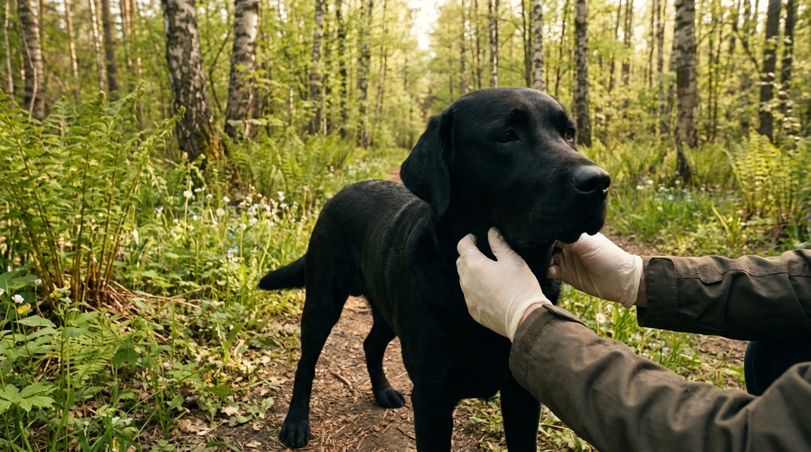

Клещи в России активны с марта по ноябрь. Блохи — круглый год в городских квартирах, сезонно усиливаясь летом. Пироплазмоз, передаваемый клещами, убивает непривитых и незащищённых собак за 3-5 дней. Блохи разносят ленточных гельминтов и вызывают аллергический дерматит. Защита — не опция, а стандарт ухода. Разбираем, как выбрать средства, как их правильно применять и какие ошибки сводят защиту на нет.
Главная опасность — бабезиоз (пироплазмоз). Одноклеточный паразит Babesia canis разрушает эритроциты. Без лечения — анемия, отказ почек, печени, смерть. Инкубационный период — от 3 до 10 дней после укуса. Симптомы: вялость, отказ от еды, моча тёмно-коричневого или красного цвета (гемоглобинурия), высокая температура, жёлтые слизистые.
Также клещи передают боррелиоз (болезнь Лайма), эрлихиоз, анаплазмоз. В отличие от пироплазмоза, эти инфекции развиваются медленнее, но при отсутствии лечения дают серьёзные осложнения — артриты, поражения почек и нервной системы.
Клещи не прыгают — они сидят на растениях и цепляются при контакте. Пик активности — утром и вечером в тёплую погоду. Предпочитают переходные зоны: опушки, высокую траву, кустарник. На открытом газоне и асфальте клещей нет.
Спот-он капли (на холку) — самый популярный формат. Активное вещество всасывается в кожный жир и действует 4-8 недель.
Таблетки и жевательные лакомства — действующее вещество всасывается в кровь, клещ погибает при укусе. Удобно: не смывается при купании.
Ошейники — постоянно выделяют действующее вещество.
Спреи — быстрое нанесение, но требуют обработки буквально перед каждой прогулкой в опасный сезон. Работают как дополнение, а не основная защита.
Рекомендуемый подход ветеринарных паразитологов:
Блохи проводят большую часть жизни не на собаке, а в среде: подстилка, ковры, щели в полу. Поэтому обработать только собаку — недостаточно.
Обработка собаки: системные таблетки (флураланер, афоксоланер) или спот-он с имидаклопридом (Advantage, Frontline Combo). При активной инвазии первая таблетка начинает убивать блох через 30-60 минут.
Обработка среды: при обнаружении блох — обязательна. Специальные спреи для помещений (Hartz, Bolfo, Frontline Home Spray). Стирайте подстилку при 60 градусах. Пылесосьте ежедневно, пылесборник выбрасывайте сразу.
Признаки блох: почёсывание (особенно спина, хвост, за ушами), тёмные крупинки в шерсти ("блошиный помёт" — намокнув, оставляет красно-коричневый след на белой бумаге), мелкие красные укусы на животе.
Клещ присосался — и вы не уверены, что делать дальше? Напишите в AnimaLife, vet-AI поможет оценить ситуацию и сказать, нужна ли срочная помощь.
Спросить vet-AI в Telegram → · Спросить в MAX →
Нужна ли обработка, если собака гуляет только на асфальте?
От клещей — риск минимален, но не нулевой (собаки нюхают траву у деревьев). От блох — обязательно, они есть в подъездах, на лестницах, в лифтах.
Можно ли использовать два средства одновременно?
Сочетание таблеток с ошейником Seresto — допустимо и рекомендуется при высоком риске. Два препарата одного класса (например, две таблетки разных марок) — нельзя без консультации врача.
Детские средства от комаров помогут от клещей?
Нет. ДЭТА-репелленты для людей использовать на собаке нельзя — токсичны. Для собак есть специальные спреи.
Как понять, что клещ инфицирован?
Внешне — никак. Только лабораторный анализ клеща. Ориентируйтесь на наблюдение за собакой 2 недели после укуса, а не на внешний вид клеща.
Когда начинать защиту весной?
Когда температура воздуха стабильно держится выше +5 градусов. В Москве и Подмосковье — обычно с середины марта. При выезде на первую дачу сезона собака уже должна быть под защитой.